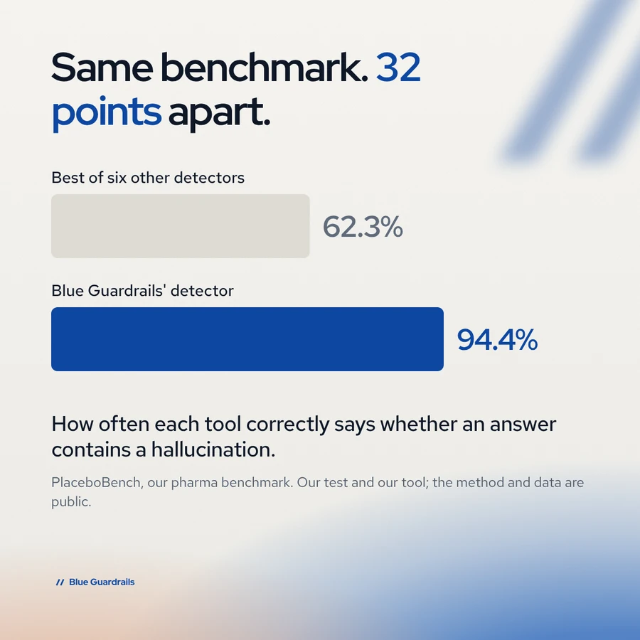

“We tested seven hallucination detectors on PlaceboBench, our pharma benchmark. Six scored between 53.6% and 62.3%.”
Read the full sample post
We tested seven hallucination detectors on PlaceboBench, our pharma benchmark. Six scored between 53.6% and 62.3%.
The score: how often a tool correctly says whether an answer contains a hallucination. Flagging every answer scores about 45% on this data. Six did only a little better than that.
Our detector, an LLM-based verification agent, scored 94.4%.
Two caveats. It's our benchmark and our tool. And the labels started from our detector's output. We reviewed every flag by hand, added what it missed, and a second annotator checked every label.
The method and dataset are public, so you can check our numbers. Links in the comments.
What I’d write for the website
The film shows one mistake. An engineer might reasonably ask how often the detector gets it right. Mathis’s post gives the result. On the website, I’d explain that 94.4% is the share of answers the detector judged correctly on this particular test. Blue Guardrails built both the detector and the benchmark.
I’d show how answers were labelled and link the method and dataset. That gives the engineer enough detail to decide whether the test resembles their own work.